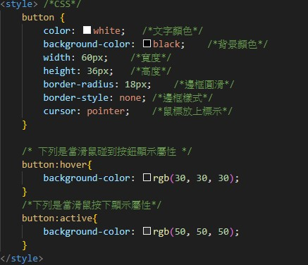

製作按鈕
用標籤style表示
color > 文字顏色
background-color > 背景顏色
width > 寬度
height > 高度
border-radius > 邊框圓滑
border-style > 邊框樣式
cursor: pointer> 鼠標放上時標示
button:hover{} > 當滑鼠碰到按鈕顯示屬性
button:active{} > 是當滑鼠按下顯示屬性
下圖為範例
